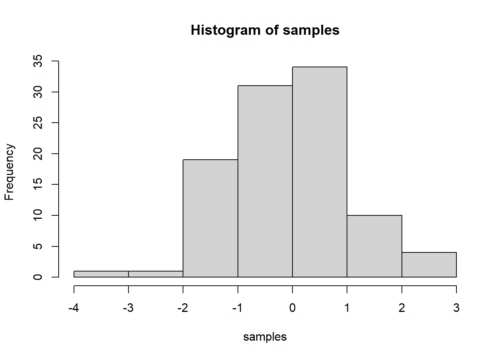

Find the sum of all the integer numbers from 1 to 100.
sum(1:100)## [1] 5050sum<-0
for (i in 1:100){
sum<-sum+i
}Write a function to find the sum of all integers between any two values.
value.sum<- function(x,y){
sum(x:y)
}
value.sum(1,100)## [1] 5050List all of the odd numbers from 1 to 100.
seq(1,100,2)## [1] 1 3 5 7 9 11 13 15 17 19 21 23 25 27 29 31 33 35 37 39 41 43 45 47 49
## [26] 51 53 55 57 59 61 63 65 67 69 71 73 75 77 79 81 83 85 87 89 91 93 95 97 99num<-0
for (i in 1:100){
num<-num+i
if (num%%2 != 0)
print(num)
}## [1] 1
## [1] 3
## [1] 15
## [1] 21
## [1] 45
## [1] 55
## [1] 91
## [1] 105
## [1] 153
## [1] 171
## [1] 231
## [1] 253
## [1] 325
## [1] 351
## [1] 435
## [1] 465
## [1] 561
## [1] 595
## [1] 703
## [1] 741
## [1] 861
## [1] 903
## [1] 1035
## [1] 1081
## [1] 1225
## [1] 1275
## [1] 1431
## [1] 1485
## [1] 1653
## [1] 1711
## [1] 1891
## [1] 1953
## [1] 2145
## [1] 2211
## [1] 2415
## [1] 2485
## [1] 2701
## [1] 2775
## [1] 3003
## [1] 3081
## [1] 3321
## [1] 3403
## [1] 3655
## [1] 3741
## [1] 4005
## [1] 4095
## [1] 4371
## [1] 4465
## [1] 4753
## [1] 4851#best attempt using modList all of the prime numbers from 1 to 1000.
#developing algorithm based on sieve of Eratosthenes
prime_numbers <- function(n){
if(n>=2){
}
}
prime_numbers(1000)## NULL?runif
#why runif over rnorm ?
runif(100)## [1] 0.300035645 0.453667155 0.318367144 0.742085804 0.584641062 0.181399495
## [7] 0.788320288 0.606189657 0.740623364 0.831103363 0.571087722 0.028226331
## [13] 0.874957840 0.347984615 0.753990131 0.924250756 0.469290718 0.232231610
## [19] 0.463755490 0.333078585 0.167112830 0.062956648 0.081970632 0.968091593
## [25] 0.969525657 0.811940128 0.997201073 0.094655285 0.872603609 0.537736559
## [31] 0.901381065 0.937789530 0.800024544 0.949062521 0.055588764 0.948155602
## [37] 0.726362730 0.592734626 0.574095733 0.401866347 0.057949035 0.102447706
## [43] 0.698567980 0.001065341 0.578843120 0.987715077 0.217117524 0.203429390
## [49] 0.627353364 0.439106491 0.804338450 0.434282802 0.136701111 0.432805639
## [55] 0.285521183 0.451238704 0.331619862 0.167286828 0.243631606 0.992728516
## [61] 0.032493994 0.890887604 0.562983159 0.037154144 0.978553128 0.017416625
## [67] 0.146566336 0.779203074 0.972474958 0.272484147 0.741489530 0.480156005
## [73] 0.520851693 0.328612511 0.280297283 0.259064338 0.929373900 0.312765543
## [79] 0.358892220 0.351296467 0.918569707 0.418366623 0.664325641 0.085486655
## [85] 0.765969946 0.435556415 0.840085082 0.310892460 0.716666585 0.527592802
## [91] 0.763856633 0.103718413 0.569671359 0.519454866 0.705539392 0.889671460
## [97] 0.572768017 0.476901979 0.777622407 0.790881326So, let’s say you are learning how to make a histogram in R. For example, maybe you want to sample 100 numbers from a normal distribution with mean = 0, and standard deviation =1, and then you want to plot a histogram. You can do this right here by using an r code block, like this:
samples <- rnorm(100, mean=0, sd=1)
hist(samples)
Do simple math with numbers, addition, subtraction, multiplication, division
1+2## [1] 32*5## [1] 105/3## [1] 1.666667(1+6+4)/5## [1] 2.2Put numbers into variables, do simple math on the variables
a<-1
b<-2
a+b## [1] 3d<-c(1,2,3)
e<-c(5,6,7)
d+e## [1] 6 8 10d*e## [1] 5 12 21d/e## [1] 0.2000000 0.3333333 0.4285714Write code that will place the numbers 1 to 100 separately into a variable using for loop. Then, again using the seq function.
# for loop solution
# i becomes the number 1 to 100 at each step of the loop
a <- length(100) # make empty variable, set length to 100
for (i in 1:100){
a[i] <-i #assigns the number in i, to the ith index of a
}
print(a)## [1] 1 2 3 4 5 6 7 8 9 10 11 12 13 14 15 16 17 18
## [19] 19 20 21 22 23 24 25 26 27 28 29 30 31 32 33 34 35 36
## [37] 37 38 39 40 41 42 43 44 45 46 47 48 49 50 51 52 53 54
## [55] 55 56 57 58 59 60 61 62 63 64 65 66 67 68 69 70 71 72
## [73] 73 74 75 76 77 78 79 80 81 82 83 84 85 86 87 88 89 90
## [91] 91 92 93 94 95 96 97 98 99 100# for loop solution #2
a<-c() #create empty variable using combine command
for (i in 1:100){
a<-c(a,i) # keeps combining a with itself and the new number in i
}
print(a)## [1] 1 2 3 4 5 6 7 8 9 10 11 12 13 14 15 16 17 18
## [19] 19 20 21 22 23 24 25 26 27 28 29 30 31 32 33 34 35 36
## [37] 37 38 39 40 41 42 43 44 45 46 47 48 49 50 51 52 53 54
## [55] 55 56 57 58 59 60 61 62 63 64 65 66 67 68 69 70 71 72
## [73] 73 74 75 76 77 78 79 80 81 82 83 84 85 86 87 88 89 90
## [91] 91 92 93 94 95 96 97 98 99 100# seq solution
a <- seq(1,100,1) # look up help for seq using ?seq() in console
print(a)## [1] 1 2 3 4 5 6 7 8 9 10 11 12 13 14 15 16 17 18
## [19] 19 20 21 22 23 24 25 26 27 28 29 30 31 32 33 34 35 36
## [37] 37 38 39 40 41 42 43 44 45 46 47 48 49 50 51 52 53 54
## [55] 55 56 57 58 59 60 61 62 63 64 65 66 67 68 69 70 71 72
## [73] 73 74 75 76 77 78 79 80 81 82 83 84 85 86 87 88 89 90
## [91] 91 92 93 94 95 96 97 98 99 100